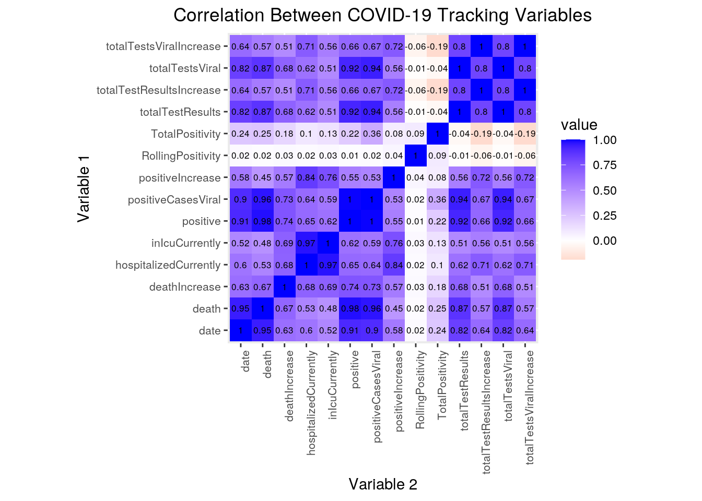

April 6, 2021
Introduction
After living at home for over a year, I was curious as to which degree the pandemic had changed in the US. I obtained datasets tracking COVID-19 statistics on a state level from the COVID Tracking Project (https://covidtracking.com/data/download), deciding to use data from Texas & California because they are controlled by opposing political parties but are similar in being the most populous states of the US. This comparison is interesting to me because it can show the effects of policies and public sentiment, along with showing the development in COVID-19 prevention on a state level. I expect associations between certain dates like holidays and a spike in cases. Additionally, I expect strong associations between deaths and positive results, along with between date and positive test result numbers.
Joining/Merging
library(lubridate)
library(tidyverse)
library(dplyr)
TXHis <- read.csv("texas-history.csv")
CAHis <- read.csv("california-history.csv")
tx20 <- TXHis[-c(370), ]
ca20 <- CAHis
covdata <- full_join(tx20, ca20)I chose to combine both datasets using a full join. While both datasets contained observations from mostly the same variables, some variables were unique to one dataset. I decided to do a full join to conserve data from these unique variables. While I could not compare those observations between states, I can still observe changes in these measures through time. The only case I dropped was row 370 of the Texas dataset, which was the earliest observation date in Texas “03-03-2020”. This date was not included in California’s dataset, and so the variable date would not provide a proper variable to join by.
Tidying & Wrangling
covdata$date <- as.Date(covdata$date)
covdata <- covdata %>% select(-deathConfirmed, -deathProbable,
-hospitalized, -hospitalizedCumulative, -hospitalizedIncrease,
-inIcuCumulative, -negative, -negativeIncrease, -negativeTestsAntibody,
-negativeTestsPeopleAntibody, -negativeTestsViral, -onVentilatorCumulative,
-onVentilatorCurrently, -positiveScore, -positiveTestsPeopleAntibody,
-positiveTestsPeopleAntigen, -totalTestEncountersViral, -totalTestEncountersViralIncrease,
-totalTestsPeopleAntibody, -totalTestsPeopleAntigen, -totalTestsPeopleViral,
-totalTestsPeopleViralIncrease) %>% mutate(TotalPositivity = positive/totalTestResults,
RollingPositivity = ifelse(is.infinite(positiveIncrease/totalTestResultsIncrease),
0, positiveIncrease/totalTestResultsIncrease))
covdata %>% arrange(desc(date)) %>% summarise_if(is.numeric,
list(Mean = mean, SD = sd, Variance = var, Max = max, N = n_distinct),
na.rm = T) %>% pivot_longer(contains("_")) %>% separate(name,
into = c("Variable", "Stat"), sep = "_") %>% pivot_wider(names_from = "Variable",
values_from = "value") %>% mutate_if(is.numeric, round, 3)## # A tibble: 5 x 20
## Stat death deathIncrease hospitalizedCur… inIcuCurrently positive
## <chr> <dbl> <dbl> <dbl> <dbl> <dbl>
## 1 Mean 1.53e4 134. 6954. 2058. 9.35e 5
## 2 SD 1.36e4 147. 4844. 1053. 9.88e 5
## 3 Vari… 1.85e8 21647. 23466237. 1108328. 9.77e11
## 4 Max 5.41e4 1114 22851 4971 3.50e 6
## 5 N 7.02e2 309 646 488 7.30e 2
## # … with 14 more variables: positiveCasesViral <dbl>, positiveIncrease <dbl>,
## # positiveTestsAntibody <dbl>, positiveTestsAntigen <dbl>,
## # positiveTestsViral <dbl>, recovered <dbl>, totalTestResults <dbl>,
## # totalTestResultsIncrease <dbl>, totalTestsAntibody <dbl>,
## # totalTestsAntigen <dbl>, totalTestsViral <dbl>,
## # totalTestsViralIncrease <dbl>, TotalPositivity <dbl>,
## # RollingPositivity <dbl>covdata %>% select(-positiveTestsAntibody, -positiveTestsAntigen,
-positiveTestsViral, -recovered, -totalTestsAntibody, -totalTestsAntigen) %>%
mutate(date = as.Date(date)) %>% filter(date > "2020-06-07") %>%
group_by(state) %>% summarise_if(is.numeric, list(Mean = mean,
SD = sd, Variance = var, Max = max, N = n_distinct, Median = median),
na.rm = T) %>% pivot_longer(contains("_")) %>% separate(name,
into = c("Variable", "Stat"), sep = "_") %>% pivot_wider(names_from = "Variable",
values_from = "value") %>% mutate_if(is.numeric, round, 3)## # A tibble: 12 x 15
## state Stat death deathIncrease hospitalizedCur… inIcuCurrently positive
## <fct> <chr> <dbl> <dbl> <dbl> <dbl> <dbl>
## 1 TX Mean 1.90e4 156. 7427. 2246. 1.13e 6
## 2 TX SD 1.22e4 120. 3296. 798. 7.98e 5
## 3 TX Vari… 1.49e8 14414. 10860523. 636433. 6.37e11
## 4 TX Max 4.45e4 675 14218 3686 2.69e 6
## 5 TX N 2.72e2 197 261 189 2.73e 2
## 6 TX Medi… 1.73e4 126 7304 2299 8.45e 5
## 7 CA Mean 2.04e4 181. 8626. 2109. 1.37e 6
## 8 CA SD 1.32e4 184. 5936. 1260. 1.10e 6
## 9 CA Vari… 1.74e8 33734. 35231897. 1586524. 1.20e12
## 10 CA Max 5.41e4 1114 22851 4971 3.50e 6
## 11 CA N 2.73e2 195 262 255 2.73e 2
## 12 CA Medi… 1.72e4 110 6520 1801 8.81e 5
## # … with 8 more variables: positiveCasesViral <dbl>, positiveIncrease <dbl>,
## # totalTestResults <dbl>, totalTestResultsIncrease <dbl>,
## # totalTestsViral <dbl>, totalTestsViralIncrease <dbl>,
## # TotalPositivity <dbl>, RollingPositivity <dbl>To tidy the dataset after obtaining summary values as a whole, I pivoted longer for variables including an underscore to convert the summary variables from columns into rows and their representative values. I then separated the summary variables into variable and statistic columns, which grouped observations by statistics like mean. Finally, I pivoted the dataset wider, allowing the visualization of several statistics for each variable at once. The same process was used to create summary variables for both Texas & California after June 7th 2020 separately.
To generate summary statistics by wrangling, I first selected against variables that did not appear consistently or were not measured by both states. I used mutate to generate the variables of Rolling & Total COVID-19 Test Postivity as a function of positive results and testing for each day. For the overall summary where I used statistics like mean, Standard Deviation (SD), Variance, Maximum, and number of distinct observations (N), arranging allowed me to group observations by date and generate statistics using a summary of the resulting data. For the summary by state, I filtered for dates after June 7th 2020, which represented the later half of the dataset and allowed me to use data from a period of sustained COVID-19 response. After grouping the resulting data by state, I was able to summarize the statistics for each variable over the period measured for Texas & California.
An interesting result from wrangling of summary statistics was the large variance for all the variables across both summaries with the exception of TotalPositivity (0.000-0.001). This shows that all values except for Total Variance were not stable and changed through time a significant amount. Additionally, the high number of distinct readings for each variable (up to ) indicates instability in each measure, signifying that no variable was stagnant for a significant period of time. Finally, the most interesting result from creating summary statistics was the inconsistency in data recording by both states. This can clearly be seen by the maximum Rolling Positivity of 50.338 for Texas, which means 50.388x the number of tests given on Dec 12th, 2020 in Texas were positive. This is realistically impossible and exemplifies how inconsistent recording occurred in Texas as the state hurried to develop a functional COVID-19 response.
Correlation Matrix
cov <- covdata %>% select(-state, -positiveTestsAntibody, -positiveTestsAntigen,
-positiveTestsViral, -recovered, -totalTestsAntibody, -totalTestsAntigen) %>%
mutate(date = as.numeric(date)) %>% cor(use = "pair")
cov## date death deathIncrease
## date 1.00000000 0.94522440 0.6270131
## death 0.94522440 1.00000000 0.6656562
## deathIncrease 0.62701309 0.66565623 1.0000000
## hospitalizedCurrently 0.60144309 0.52976843 0.6816089
## inIcuCurrently 0.51926315 0.47587621 0.6890812
## positive 0.90938961 0.97826467 0.7389237
## positiveCasesViral 0.89920323 0.96479080 0.7339200
## hospitalizedCurrently inIcuCurrently positive
## date 0.60144309 0.51926315 0.90938961
## death 0.52976843 0.47587621 0.97826467
## deathIncrease 0.68160893 0.68908124 0.73892374
## hospitalizedCurrently 1.00000000 0.97085070 0.64959931
## inIcuCurrently 0.97085070 1.00000000 0.61534068
## positive 0.64959931 0.61534068 1.00000000
## positiveCasesViral 0.64452725 0.59119150 0.99617527
## positiveCasesViral positiveIncrease totalTestResults
## date 0.89920323 0.58019752 0.82445431
## death 0.96479080 0.45250870 0.87085703
## deathIncrease 0.73391997 0.57271514 0.67855738
## hospitalizedCurrently 0.64452725 0.84273121 0.61560433
## inIcuCurrently 0.59119150 0.76036201 0.50910438
## positive 0.99617527 0.55253152 0.92057778
## positiveCasesViral 1.00000000 0.52933256 0.94167121
## totalTestResultsIncrease totalTestsViral
## date 0.64352691 0.82445431
## death 0.56906089 0.87085703
## deathIncrease 0.50673527 0.67855738
## hospitalizedCurrently 0.70926158 0.61560433
## inIcuCurrently 0.56024283 0.50910438
## positive 0.65985700 0.92057778
## positiveCasesViral 0.66811209 0.94167121
## totalTestsViralIncrease TotalPositivity
## date 0.64351867 0.24073098
## death 0.56906089 0.25308311
## deathIncrease 0.50673236 0.17659122
## hospitalizedCurrently 0.70926158 0.10160817
## inIcuCurrently 0.56024283 0.12710251
## positive 0.65985508 0.21977100
## positiveCasesViral 0.66811209 0.36401342
## RollingPositivity
## date 0.02373265
## death 0.01678406
## deathIncrease 0.02735160
## hospitalizedCurrently 0.02315536
## inIcuCurrently 0.02864847
## positive 0.01277286
## positiveCasesViral 0.01823023
## [ reached getOption("max.print") -- omitted 7 rows ]Visualizing
Correlation Heatmap
cov %>% as.data.frame %>% rownames_to_column %>% pivot_longer(-1) %>%
ggplot(aes(rowname, name, fill = value)) + geom_tile() +
scale_fill_gradient2(low = "red", high = "blue") + geom_text(aes(label = round(value,
2)), color = "black", size = 2.25) + xlab("") + ylab("") +
theme(axis.text.x = element_text(size = 8, angle = 90, hjust = 1),
axis.text.y = element_text(size = 8)) + coord_fixed() +
ggtitle("Correlation Between COVID-19 Tracking Variables") +
theme(plot.title = element_text(hjust = 0.5)) + xlab("Variable 2") +
ylab("Variable 1") In the correlation heatmap, relationships between the variables appear to be mainly positive, with only Positivity Rates having no or negative correlation with other variables. Date and Death have a strong relationship of 0.95, which shows that as measurement date progresses, the number of deaths increase. ICU Care and Hospitalization are also highly positively correlated at 0.97, which shows that more people in hospitals as a result of COVID-19 tends to mean more people in the ICU for the same reason. Death & Date also have a strong positive correlation to the number of positive cases, as they both increase as the date progresses.
The number of tests done (totalTestResults) is also highly positively correlated with the number of positive cases (positive) at 0.92 and the Date (0.82) & Death (0.87), which shows their increase through time. Rates of positive increase (positiveIncrease) is also related to hospitalization rates (hospitalizedCurrently) at 0.84 and ICU rates (inIcuCurrently) at 0.76, meaning that increased rates of positive cases implies a greater rate of hospitalization and number of ICU patients. However, an negative correlation is weak between TotalPositivity & the increase in total test results (totalTestResultsIncrease). This indicates that as testing increases, rates of positivity decrease as more negative results occur.
Plot 1: COVID-19 Positivity Rates
statcov <- covdata %>% select(-positiveTestsAntibody, -positiveTestsAntigen,
-positiveTestsViral, -recovered, -totalTestsAntibody, -totalTestsAntigen) %>%
mutate_if(is.numeric, round, 3)
statcov$date <- as.Date(statcov$date, format = "%m/%d/%Y")
statcov %>% gather(key, value, RollingPositivity, TotalPositivity) %>%
ggplot(aes(x = date, y = value, alpha = key, color = state)) +
geom_point(size = 1.25, shape = 1) + scale_alpha_discrete(range = c(0.25,
1)) + scale_y_continuous(limits = c(0, 1), breaks = seq(0,
1, 0.1)) + scale_x_date(date_breaks = "2 months", date_labels = "%b-%y") +
theme_minimal() + ggtitle("Comparison of COVID-19 Test Positivity Rates Through Time in TX & CA") +
theme(plot.title = element_text(hjust = 0.45)) + xlab("Date") +
ylab("Proportion") Some trends observed in this plot are the initial spike in test positivity for California at the beginning of data recording and the changes in Rolling Positivity at certain dates. The initial spike in California COVID-19 test positivity shows the low numbers of testing done and the targeting of testing towards populations suspected of COVID-19 infection. This is further explained in the leveling and drop-off of positivity rates for California after the first month of measurement. Observing the Rolling Positivity, we see spikes in the months of August 2020 along with December 2020 and January 2021. A common factor for these months is their occurrence shortly after national holidays such as Independence Day, Thanksgiving, and Christmas. This could help explain the abrupt shifts as more people saw each other and potentially unknowingly transmitted COVID-19. A final trend to observe is the distinction in overall positivity (Total Positivity) between Texas and California. This becomes clear in the month of July, where Texas surpasses a positivity rate of 10% while California stays under 10% throughout the time of data measurement.
Some trends observed in this plot are the initial spike in test positivity for California at the beginning of data recording and the changes in Rolling Positivity at certain dates. The initial spike in California COVID-19 test positivity shows the low numbers of testing done and the targeting of testing towards populations suspected of COVID-19 infection. This is further explained in the leveling and drop-off of positivity rates for California after the first month of measurement. Observing the Rolling Positivity, we see spikes in the months of August 2020 along with December 2020 and January 2021. A common factor for these months is their occurrence shortly after national holidays such as Independence Day, Thanksgiving, and Christmas. This could help explain the abrupt shifts as more people saw each other and potentially unknowingly transmitted COVID-19. A final trend to observe is the distinction in overall positivity (Total Positivity) between Texas and California. This becomes clear in the month of July, where Texas surpasses a positivity rate of 10% while California stays under 10% throughout the time of data measurement.
Plot 2: COVID-19 Outcomes
statcov %>% mutate(deathIncreasePerDay = deathIncrease) %>% gather(key,
value, deathIncreasePerDay, hospitalizedCurrently, inIcuCurrently) %>%
ggplot(aes(x = date, y = value, color = key)) + geom_line(stat = "summary",
fun = mean) + scale_y_continuous(limits = c(0, 14000), breaks = seq(0,
14000, 1000)) + scale_x_date(date_breaks = "2 months", date_labels = "%b-%y") +
theme_minimal() + ggtitle("Overall Relationship between COVID-19 Hospitalization, ICU Care, & Death") +
ylab("Number of Persons") + xlab("Date") + theme(plot.title = element_text(hjust = 0.3)) Trends and relationships found in previous datasets are also exemplified in this plot. Sudden jumps in the lines representing the data can be explained by inconsistencies in data measurement, which can be seen in ICU patient numbers (inIcuCurrently) for July 2020, along with hospitalization numbers (hospitalizationCurrently) in March and April 2020. Another trend found in this graph is the spike for all visualized variables in July, August, and December 2020, along with January 2021. This follows along with the explanation for the previous graph, where increases in cases were seen soon after holidays such as July 4th, Thanksgiving, and Christmas, where people tend to visit each other and the potential for COVID-19 spread is high. Additionally, we also see spikes in death rates following shortly after spikes in hospitalization & ICU. This follows convention, as a rise in intensive care requirements and hospitalization from COVID-19 precludes a greater numbers of deaths, not necessarily a greater proportion. Altogether, this graph supprts the data and conclusions made from previous visualizations.
Trends and relationships found in previous datasets are also exemplified in this plot. Sudden jumps in the lines representing the data can be explained by inconsistencies in data measurement, which can be seen in ICU patient numbers (inIcuCurrently) for July 2020, along with hospitalization numbers (hospitalizationCurrently) in March and April 2020. Another trend found in this graph is the spike for all visualized variables in July, August, and December 2020, along with January 2021. This follows along with the explanation for the previous graph, where increases in cases were seen soon after holidays such as July 4th, Thanksgiving, and Christmas, where people tend to visit each other and the potential for COVID-19 spread is high. Additionally, we also see spikes in death rates following shortly after spikes in hospitalization & ICU. This follows convention, as a rise in intensive care requirements and hospitalization from COVID-19 precludes a greater numbers of deaths, not necessarily a greater proportion. Altogether, this graph supprts the data and conclusions made from previous visualizations.
Dimensionality Reduction
Preparation/PCA
vistatcov <- statcov %>% select(-TotalPositivity, -RollingPositivity,
-positiveCasesViral, -totalTestsViral, -totalTestsViralIncrease)
vistatcov[is.na(vistatcov)] = 0
cov_num <- vistatcov %>% select_if(is.numeric, na.rm = T) %>%
scale
rownames(cov_num) <- vistatcov$date
cov_pca <- princomp(cov_num)Choosing Number of PCs (Scree Plot, Kaiser’s Rule)
eigval <- cov_pca$sdev^2
varprop = round(eigval/sum(eigval), 2)
ggplot() + geom_bar(aes(y = varprop, x = 1:8), stat = "identity") +
xlab("") + geom_path(aes(y = varprop, x = 1:8)) + geom_text(aes(x = 1:8,
y = varprop, label = round(varprop, 2)), vjust = 1, col = "orange",
size = 5) + scale_y_continuous(breaks = seq(0, 0.6, 0.2),
labels = scales::percent) + scale_x_continuous(breaks = 1:10) +
ggtitle("Scree Plot for PCA of COVID-19 Data") + theme(plot.title = element_text(hjust = 0.5)) +
xlab("Principal Component") + ylab("Percentage of Variance Accounted For")
eigval## Comp.1 Comp.2 Comp.3 Comp.4 Comp.5 Comp.6
## 5.886646333 0.961576974 0.555086276 0.261925461 0.196721050 0.073096834
## Comp.7 Comp.8
## 0.046570796 0.007536167Computation/Visualization (PC Plot & Plot of Loadings)
covplot <- statcov %>% select_if(is.numeric, na.rm = T)
statcov %>% mutate(PC1 = cov_pca$scores[, 1], PC2 = cov_pca$scores[,
2]) %>% ggplot(aes(PC1, PC2, color = state)) + geom_point() +
coord_fixed() + ggtitle("PC Plot of Relevant Principal Components in COVID-19 Data") +
theme(plot.title = element_text(hjust = 0.5)) + xlab("PC1 Score") +
ylab("PC2 Score")
library(ggrepel)
cov_pca$loadings[1:8, 1:2] %>% as.data.frame %>% rownames_to_column %>%
ggplot() + geom_hline(aes(yintercept = 0), lty = 2) + geom_vline(aes(xintercept = 0),
lty = 2) + ylab("PC2") + xlab("PC1") + geom_segment(aes(x = 0,
y = 0, xend = Comp.1, yend = Comp.2), arrow = arrow(), col = "red") +
geom_label_repel(aes(x = Comp.1, y = Comp.2, label = rowname)) +
ggtitle("PCA Plot of Loadings for Relevant Principal Components") +
theme(plot.title = element_text(hjust = 0.5))
Interpretation
cov_pca$loadings##
## Loadings:
## Comp.1 Comp.2 Comp.3 Comp.4 Comp.5 Comp.6 Comp.7
## death 0.351 0.480 0.358 0.184 0.165 0.368
## deathIncrease 0.336 0.595 -0.709 0.107 0.116
## hospitalizedCurrently 0.365 -0.393 0.115 0.150 -0.208 -0.754 0.191
## inIcuCurrently 0.363 -0.258 0.297 0.397 -0.481 0.477 -0.304
## positive 0.377 0.384 0.209 0.137 -0.151 0.131
## positiveIncrease 0.326 -0.512 -0.114 0.754 0.176 -0.130
## totalTestResults 0.368 0.334 -0.311 -0.204 -0.216 -0.729
## totalTestResultsIncrease 0.339 -0.154 -0.657 -0.319 -0.319 0.256 0.396
## Comp.8
## death 0.565
## deathIncrease
## hospitalizedCurrently 0.168
## inIcuCurrently
## positive -0.780
## positiveIncrease
## totalTestResults 0.189
## totalTestResultsIncrease
##
## Comp.1 Comp.2 Comp.3 Comp.4 Comp.5 Comp.6 Comp.7 Comp.8
## SS loadings 1.000 1.000 1.000 1.000 1.000 1.000 1.000 1.000
## Proportion Var 0.125 0.125 0.125 0.125 0.125 0.125 0.125 0.125
## Cumulative Var 0.125 0.250 0.375 0.500 0.625 0.750 0.875 1.000summary(cov_pca, loadings = T)## Importance of components:
## Comp.1 Comp.2 Comp.3 Comp.4 Comp.5
## Standard deviation 2.4262412 0.9806003 0.74504112 0.51178654 0.4435325
## Proportion of Variance 0.7368292 0.1203602 0.06947993 0.03278511 0.0246235
## Cumulative Proportion 0.7368292 0.8571894 0.92666935 0.95945445 0.9840780
## Comp.6 Comp.7 Comp.8
## Standard deviation 0.270364262 0.215802678 0.0868111014
## Proportion of Variance 0.009149502 0.005829248 0.0009432991
## Cumulative Proportion 0.993227453 0.999056701 1.0000000000
##
## Loadings:
## Comp.1 Comp.2 Comp.3 Comp.4 Comp.5 Comp.6 Comp.7
## death 0.351 0.480 0.358 0.184 0.165 0.368
## deathIncrease 0.336 0.595 -0.709 0.107 0.116
## hospitalizedCurrently 0.365 -0.393 0.115 0.150 -0.208 -0.754 0.191
## inIcuCurrently 0.363 -0.258 0.297 0.397 -0.481 0.477 -0.304
## positive 0.377 0.384 0.209 0.137 -0.151 0.131
## positiveIncrease 0.326 -0.512 -0.114 0.754 0.176 -0.130
## totalTestResults 0.368 0.334 -0.311 -0.204 -0.216 -0.729
## totalTestResultsIncrease 0.339 -0.154 -0.657 -0.319 -0.319 0.256 0.396
## Comp.8
## death 0.565
## deathIncrease
## hospitalizedCurrently 0.168
## inIcuCurrently
## positive -0.780
## positiveIncrease
## totalTestResults 0.189
## totalTestResultsIncreaseThe results found from PCA seem to show that the data can be combined into two principal components which explains a large amount of variability in the data (86%). I was able to obtain this measurement using a scree plot and Kaiser’s rule, which showed that two principal components accounted for the vast majority of the dataset’s variability. The principal component (PC1) is a general strength axis, while the second principal component (PC2) is an axis measuring Death (0.48) vs positiveIncrease (-0.51). This can help explain the PC plot’s W-like shape for both states. The furthest-right vertical band on the PC plot can be explained by more recent days of measurement, with large amounts of death and small numbers of cases or vice versa. Following this pattern, the furthest right horizontal band can be explained by days of high hospitalization and low increase in cases. This explains why California’s banding appears to be larger, as they had days with greater numbers of deaths but lower rates of positivity as seen in the visualized plots.
Conclusion
In conclusion, there are some very interesting trends that are found after analysis of the data. However, I believe that more interesting correlations could have been discovered with greater collection of data, and if both states properly recorded shared statistics. We found that levels of COVID-19 and our response to it changed through time, as exhibited by the high variance seen from summary statistics. Through the graphs, we were able to visualize some of the relationships both between Texas & California, and overall. We can see California’s initial positivity spike, along with Texas’s overall higher positivity rate and each state’s spikes through time. We also saw and analyzed the hospitalization, ICU, and death counts, finding spikes around holidays and a slight relative delay in death rates. Finally with the PCA data, we find that two clusters explain 86% of the variance due to strong relationships between the variables. Using the PC plot, we find again that there is a large amount of variability throughout the dataset. Future analysis of this data might reveal greater correlations for the decline of COVID-19, which might be best measured once joined with a dataset tracking vaccination rates in the US. At that time, we will also be able to compare the changes between prepared and unprepared responses to COVID-19 with the inclusion of more data.